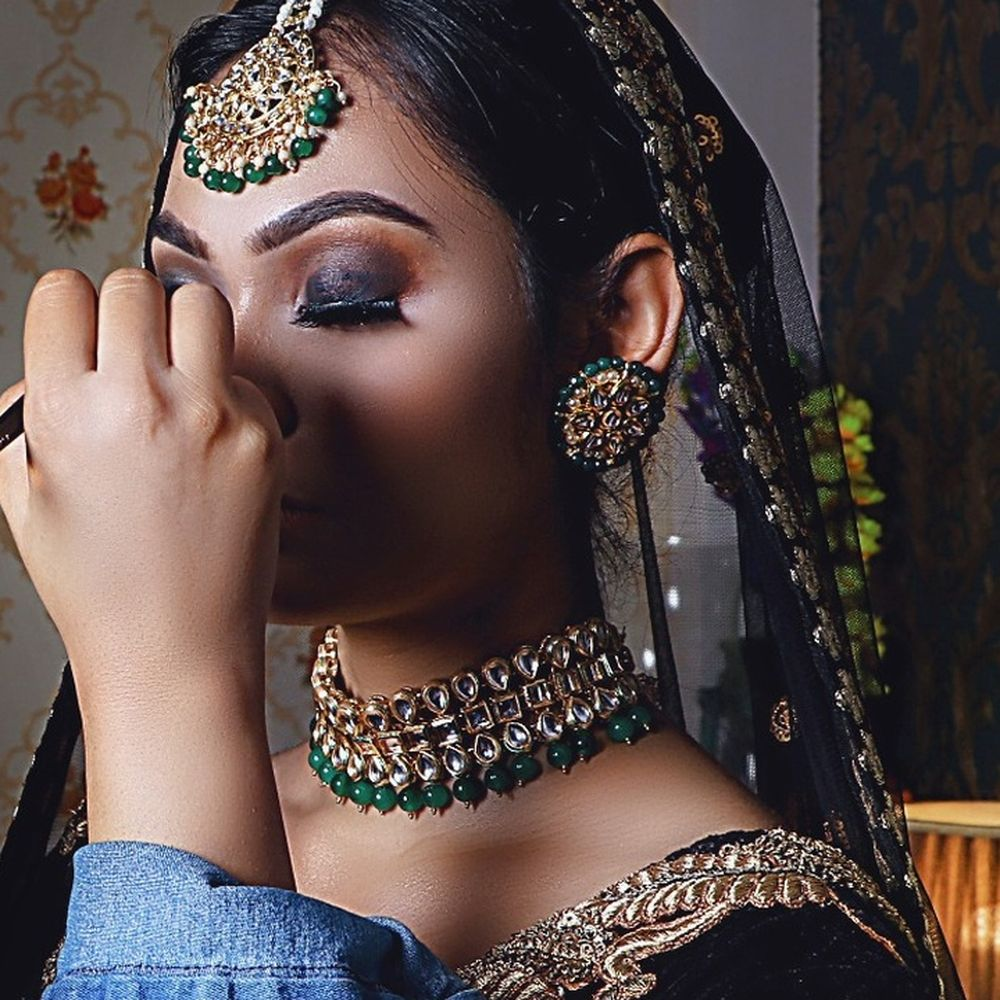

Websathi — what a website can do
Not a page.
Not a page.
A look, taken apart.
Scroll.
Scroll.
Four decisions, made in order, each one constraining the next. Most salons know this by heart and have no way to show it.

Five stages, stacked. They arrive as one pile and separate as you reach them.